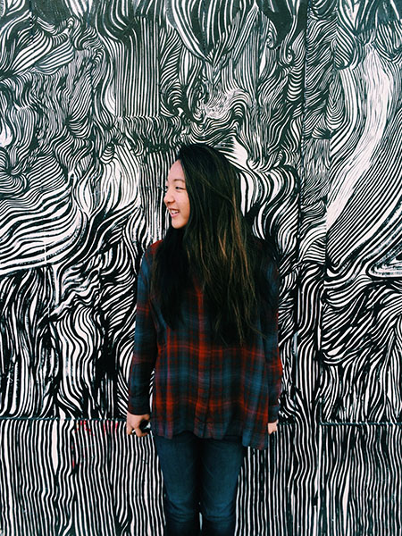

Jessica Yamauchi
UC Berkeley
|
Class of 2018
|
Architecture Major
~personal~

OVERVIEW
ACADEMICS
INTERESTS
OVERVIEW
Hello everyone, Jess here! I a nineteen year old college student living the dream life, blessed with so much.
ACADEMICS
I attending Agoura Hills High school from 2010-2014. I graduated with an overall GPA of 4.18. I was a valedictorians and was in the top 1% of my graduating class. I took the AP course route and was motivated by my peers to be the best student I could possibly be. Luckily, all the hard work paid off, and I was accepted into the University of California, Berkeley!
I am currently a second year student at the UC Berkeley majoring in architecture. I initially applied into college as a Marine Science major, but after my first year at Berkeley, I was able to really explore other interests and happily found architecture to be one of my passions!
During my second semester of freshman year, I took an into environmental design class and ended up falling in love with the creative design work we were assigned throughout the semester. My final project, which you can see in my architecture portfolio, was my favorite part of the class and was a major factor I considered when deciding to switch majors.
During my second year, I have taken my first studio course, which was both stressful and rewarding. The hours and days spent in Wurster Hall are long and tiring, and I often find myself complaining... But in the end, when I look at the work I've created and done over the semester is something I can say I'm truly proud of!
Next Semester I am continuing my studio course work as well as taking classes in the City Planning and Environmental Design departments at Berkeley. I hope to study abroad this coming summer in Spain!
INTERESTS
DANCE: I absolutely love to dance! Dancing has been my greatest passions since I was able to walk. I began when I was just three years old and have continued my whole life up until this very day! I've done multiple genres including ballet, hip hop, jazz, contemporary, and modern. Up in UC Berkeley, I have been a part of several dance organizations and teams including Ballet Company at Berkeley, Danceworx, [M]ovement, TrueLement, Abba Modern, and Main Stacks. My experience as a dancer has shaped me to become who I am today. I couldn't imagine my life without this amazing performing art that allows me to express myself in ways nothing else could.
COOKING: Cooking and baking is a passtime I could never pass up. Back at home, I enjoy cooking and baking alongside my family, especially during the holidays. Making sugar cookies is a christmas tradition I have with my siblings, and I look forward to it every year! When I was growing up, I watched The FoodNetwork channel religiously and would look up to all the chefs and bakers as my role models. I almost decided to go to culinary art school, but decided that was not the career path I would take at that time. In the future, one of my dreams would be to open up a bakery and run it alongside my little sister, Nichole!
GRAPHIC DESIGN/TYPOGRAPHY: Graphic Design is a passtime that I discovered in high school when I was doodling lyrics from my favorite One Direction songs (hahah #dontjudgeme). After a while of just doodling, I decided to create my own graphic design instagram so that I can share my graphic design lyric pieces with the public Directioners. I was inspired by another instagramer who was doing the same. She received much praise and attention that I was motivated to share my own work. Now, I've moved away from One Direction lyrics and use graphic design in the context of typography. I really enjoy typography!!
APPAREL DESIGN: This year I was given the opportunity to join Danceworx officer board as apparel chair! I design several articles of clothing for this dance organization!